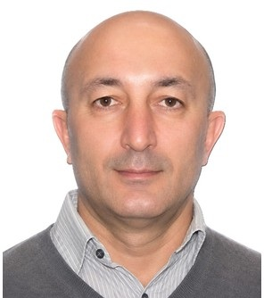

Profile
Elshad Allahyarov is a research professor of physics at Case Western Reserve University and holds concurrent research and professorial appointments at Heinrich Heine University Düsseldorf and at the Joint Institute for High Temperatures of the Russian Academy of Sciences. He received a Doctor of Sciences in physics and mathematics from the Russian Academy of Sciences in 2005. The thesis is The role of Coulomb correlations in colloids and biocolloids. Equivalent to the German Dr. habil. He received a Doctor of Philosophy in physics from the Russian Academy of Sciences in 1994, equivalent to the German Dr. and the U.S. PhD, and a diploma in physics from Moscow State University in 1988. A German Research Foundation grant of 300,000 euro for 2021–2025 supports work on the actuation of composite elastomers.
Work experience
Department of Physics, Case Western Reserve University, Cleveland, Ohio, United States
Research Professor
Soft Matter Institute, Theoretical Physics II, Heinrich Heine University Düsseldorf, Germany
Research Professor
Theoretical Department, Joint Institute for High Temperatures, Russian Academy of Sciences, Moscow, Russia
Professor
Department of Physics, Case Western Reserve University
2018–2025Research professor
Institute of Theoretical Physics II, Heinrich Heine University Düsseldorf
2012–2017Researcher
Macromolecular Science, Case Western Reserve University
2014 and 2015Visiting professor, six months each year
Department of Physics, Case Western Reserve University
2006–2011Research associate
Institute of Theoretical Physics II, Heinrich Heine University Düsseldorf
2004–2006Postdoctoral researcher
Institute of Solid State Research, IFF Theory II, Nuclear Research Center Jülich, Germany
2000–2003Privatdozent
Laboratory of Complex Fluids, Eindhoven University of Technology, Netherlands
1995–1997Visiting researcher
Joint Institute for High Temperatures, Russian Academy of Sciences, Moscow
1988–1999Postgraduate student and researcher
Education
DSc
2005Physics and mathematics. Thesis: The role of Coulomb correlations in colloids and biocolloids. Equivalent to the German Dr. habil.
Russian Academy of Sciences, Moscow, Russia
PhD
1994Physics. Thesis: Structure factor and effective interactions in non-ideal plasma and liquid metals. Equivalent to the German Dr. and the U.S. PhD.
Russian Academy of Sciences, Moscow, Russia
Diploma in physics
1988Thesis: Injection of relativistic electron beams into dense plasma. Equivalent to a Master of Arts in physics.
Moscow State University, Moscow, Russia
Grants & projects
- 2021–2025 — Actuation properties of composite elastomers. 300,000 euro — German Research Foundation (DFG)
Teaching
- 1990–1998 — Theoretical mechanics, optics, electromagnetism, quantum mechanics, statistical mechanics, theory of liquids, thermodynamics, solid-state physics, plasma physics, hydrodynamics, and mathematics — Moscow Power Engineering Institute
- 2000–2004 — Soft-matter physics, statistical physics, and thermodynamics — University of Düsseldorf, Germany
- 2009–2010 — PHYS 116, Introduction to Physics II — Case Western Reserve University
- 2017–2020 — Quantum molecular dynamics, CP2K, Car–Parrinello, and DFT simulations — University of Duisburg-Essen, Germany
Publications
Peer-reviewed journal articles
1. Dispersion of plasma oscillations in non-ideal Coulomb systems E. Allahyarov, S. A. Trigger, Teplofizika Vysokikh Tepmeratur 30, 136 (1992).
2. Three-dimensional dispersion of Langmuir oscillations in non-ideal plasma E. Allahyarov, S. A. Trigger,Teplofizika Vysokikh Temperatur 30, 462 (1992).
3. The influence of non-Coulomb interaction on plasma oscillation spectrum in classical two-component plasma E. Allahyarov, V. B. Bobrov, S. A. Trigger, Teplofizika Vysokikh Temperatur 30, 876 (1992).
4. On the temperature dependence of the liquid lithium electric resistance, E. Allahyarov, V. B. Bobrov, Teplofizika Vysokikh Temperatur 31, 207 (1993)
5. Static structure factor and electric conduction of expanded liquid cesium, E. Allahyarov, V. B. Bobrov, S. A. Trigger, Teplofizika Vysokikh Temperatur 31, 44 (1993).
6. Electrical conductivity of fully ionized plasmas with arbitrary electron degeneracy. 1: Classical plasma, V. B. Bobrov, E. Allahyarov, High temperatures 31, 422 (1993).
7. Electric conductivity of a fully ionized plasma with arbitrary electron degeneration. 2. Liquid-metal plasma V. B. Bobrov, E. Allahyarov, Teplofizika Vysokikh Temperatur 31, 352 (1993).
8. Kramers–Kronig relations for the dielectric constant of a classical plasma and the spectrum of plasma oscillations. E. Allahyarov, V.B. Bobrov, High Tempertures 31, 644 (1993)
9. Structure factor of liquid metals at small wave vectors and a model of a one-component plasma, E. Allahyarov., V. B. Bobrov, S. A. Trigger, High Temperatures 32, 341 (1994).
10. OCP reference theory of dynamic structure factors of expanded liquid metals S. A. Trigger, E. Allahyarov, P. P. J. M.Schram, Physica B 212, 97 (1995).
11. Low-angle structure behavior of expanded liquid metals, E. Allahyrov, P. P. J. M.Schram, S. A. Trigger, Physica B 212, 88 (1995).
12. Overscreening in colloidal systems: the attractive branch of pair macroion interaction, E. Allahyarov, L. I. Podloubny, P. P. J. M.Schram, S. A. Trigger, Physica A 220, 349 (1995).
13. MD simulation of the pair correlation function and static structure of charged colloidal suspensions, E. Allahyarov, P. P. J. M. Schram, S. A. Trigger, Phys.B, 228, 136 (1996).
14. Effective macroion interaction in colloidal systems: Possibility of attraction, E. Allahyarov, L. I. Podloubny, P. P. J. M. Schram, S. A. Trigger, Physica B 229, 132 (1996).
15. Damping of longtudinal waves in charged colloids, E. Allahyarov, L. I. Podloubny, P. P. J. M. Schram, S. A. Trigger, Physica B 228, 166 (1996).
16. The breaking crack build-up in perforated planes by uniform ring switching, V. M. Mirsalimov, E. Allahyarov, Int. J. Fracture 79, R17 (1996).
17. Damping of longtudinal waves in colloidal crystals of finite size E. Allahyarov, L. I. Podloubny, P. P. J. M.Schram, S. A. Trigger, Phys. Rev. E 55, 592 (1997).
18. Attraction between like-charged macroions by Coulomb depletion E. Allahyarov, I. D'Amico, H. Löwen, Phys. Rev. Letters 81, 1334 (1998).
19. Possibility of an attraction between highly charged colloids E. Allahyarov, P. P. J. M. Schram, S. A. Trigger, Proc. Int. Conf. Strongly Coupled Coulomb Systems, Plenum Press, New-York, 247 (1998).
20. Role of effective triplet interactions in charged colloidal suspensions H.Löwen, E. Allahyarov, J. Phys. Condensed Matter 10, 4147 (1998).
21. Effective forces between macroions: the cases of asymmetric macroions and added salt E. Allahyarov, H. Löwen, S. Trigger, Phys. Rev. E 57, 5818 (1998).
22. Effect of confinement on the interaction between charged colloidal particles E. Allahyarov, I. D'Amico, H. Löwen, Phys. Rev. E 60, 3199 (1999).
23. The hard physics of soft matter H. Löwen, E. Allahyarov, et al, Advances in Solid State Physics 40, 809 (2000).
24. Effective interaction between helical biomolecules E. Allahyarov, H. Löwen, Phys. Rev. E 62, 5542 (2000).
25. Effective interaction between confined colloids: repulsion or attraction H. Löwen, E. Allahyarov, I. D'Amico, Progr. Colloid Polym. Sci. 115, 367 (2000).
26. Influence of solvent granularity on the effective interaction between charged colloidal suspensions E. Allahyarov, H. Löwen, Phys. Rev. E 63, 041403 (2001).
27. Discrete solvent effects on the effective interaction between charged colloids E. Allahyarov, H. Löwen, J. Phys. Condensed Matter 13, L277 (2001).
28. Interactions and phase transitions of colloidal dispersions in bulk and at interfaces H. Löwen, E. Allahyarov, et al, Phil. Trans. Roy. Soc. Lond. A 359, 909 (2001).
29. Discrete charge patterns, Coulomb correlations and interactions in protein solutions E. Allahyarov, H. Löwen, J. P. Hansen, A. A. Louis, Europhys. Letters. 57, 731 (2002).
30. Effective forces in colloidal mixtures: from depletion attraction to accumulation repulsion A. A. Louis, E. Allahyarov, H. Löwen, R. Roth, Phys. Rev. E 65, 061407 (2002).
31. Adsorption of monovalent and multivalent cations and anions on DNA molecules E. Allahyarov, H. Löwen, G. Gompper, Phys. Rev. E 68, 061903 (2003).
32. Nonmonotonicity of second virial coefficient in strongly correlated systems E. Allahyarov, H. Löwen, J.-P. Hansen, A. A. Louis, Phys. Rev. E 67, 051404 (2003); Virtual Journal of Biological Physics Research 5,(2003).
33. Charged colloids, polyelectrolytes and biomolecules viewed as strongly coupled Coulomb systems H. Löwen, E. Allahyarov, et al., J. Phys. A: Math. Gen. 36, 5827 (2003).
34. Mesoscopic solvent simulations: Multi-particle-collision dynamics of three-dimensional flows E. Allahyarov, G. Gompper, Phys. Rev. E 66, 036702 (2003).
35. Erratum: Mesoscopic solvent simulations: Multiparticle-collision dynamics of three-dimensional flows E. Allahyarov, G. Gompper, Phys. Rev. E 67, 059901 (2003).
36. Re entrance in DNA condensation, E. Allahyarov, N. Gusein-zade, Phys. Reports of Russian Academy of Sciences 6, 49 (2004).
37. Crystallization of colloidal plasma: charge renormalization in added salt E. Allahyarov, S. Trigger, High Temperature Physics 43, 315 (2005).
38. Attraction between DNA molecules mediated by multivalent ions E. Allahyarov, G. Gompper, H. Löwen, Phys. Rev. E. 69, 041904 (2004); Virtual Journal of Biological Physics Research 7, (2004).
39. DNA condensation, re dissolution and mesocrystals induced by tetravalent counterions E. Allahyarov, H. Löwen, G. Gompper, Euro. Phys. Letters 68, 894 (2004).
40. Interaction between overcharged DNA molecules E. Allahyarov, G.Gompper, H.Löwen, J.Phys. Cond. Matter 17, S1827 (2005).
41. Charged colloids and polyelectrolytes: from statics to electrokinetics H. Löwen, E. Allahyarov et al, J. Phys.: Conf. Ser. 11, 207 (2005).
42. Interaction between charged colloids in a low dielectric constant solvent E. Allahyarov et al, Euro.Phys. Letters 78, 38802 (2007).
43. Role of electrostatic forces in cluster formation in a dry ionomer E. Allahyarov, P. Taylor, J. Chem. Phys. 127, 154901 (2007).
44. Charged colloidal particles in a charged wedge: do they go in or out H. Löwen, E.Allahyarov et al, J. Phys.: Condens. Matter 20, 404221 (2008).
45. Colloids in a low dielectric constant solvent, E. Allahyarov, E. Zaccarelli, F. Sciortino, H. Löwen, Europhys. Lett. 81, 59901 (2008).
46. Predicted electric-field-induced hexatic structure in an ionomer membrane E. Allahyarov, P. Taylor, Phys. Rev. E 80, 020801(R) (2009).
47. Simulation Study of the Correlation between Structure and Conductivity in Stretched Nafion E. Allahyarov, P. Taylor, J. Phys. Chem. B 113, 610 (2009).
48. Nonadditivity in the effective interactions of binary charged colloidal suspensions, E. Allahyarov, H. Löwen, J. Phys.: Condens. Matter 21, 424117 (2009).
49. Simulation Study of Sulfonate Cluster Swelling in Ionomers E. Allahyarov, P. Taylor, H. Löwen, Phys. Rev. E 80, 061802 (2009).
50. Simulation study of field-induced morphological changes in a proton-conducting ionomer E. Allahyarov, P. Taylor, H. Löwen, Phys. Rev. E 81, 031805 (2010).
51. Simulation study of the equilibrium morphology in ionomers with different architectures E. Allahyarov, P. Taylor, J. Polymer Sci. B: Polymer Physics 49, 368 (2011).
52. Simulation study of field-induced proton conduction pathways in dry ionomers E. Allahyarov, P. Taylor, H. Löwen, J. Phys.: Condens. Matter 23, 234105 (2011).
53. Heterogeneous crystallization of hard-sphere colloids near a wall K. Sandomirski, E. Allahyarov, H. Löwen, S. U. Egelhaaf, Soft Matter 7, 8050 (2011).
54. Huge broadening of the crystal-fluid interface for sedimenting colloids E. Allahyarov, H. Löwen, Euro. Phys. Letters 95, 38004 (2011).
55. Simulation study of poled low-water ionomers with different architectures E. Allahyarov, P. Taylor, H. Löwen, J. Phys.: Condens. Matter 23, 455102 (2011).
56. Double clustering in binary mass hard sphere system E. Allahyarov, H. Löwen, J. Chem. Phys. 135, 134115 (2011).
57. Heterogeneous crystallization in colloids and complex plasmas: the role of binary mobilities. H. Löwen, E. Allahyarov, A. Ivlev, G. E. Morfill, J. Phys.: Condens. Matter 24, 284125 (2012).
58. Crystal Orientation and Temperature Effects on Double Hysteresis Loop Behavior in a Poly(vinylidene fluoride-co-trifluoroethylene-co-chlorotrifluoroethylene)-graft-Polystyrene Graft Copolymer, L. Yang, E. Allahyarov, F. Guan, L. Zhu, Macromolecules 46, 9698–9711 (2013).
59. Novel polymer ferroelectric behavior via crystal isomorphism and the nanoconfinement effect, L. Yang, X. Li, E. Allahyarov, P. Taylor, Q.M. Zhang, L. Zhu, Polymer 54, 1709-1728 (2013).
60. Highly asymmetric electrolytes in the primitive model: Hypernetted chain solution in arbitrary spatial dimensions. M. Heinen, E. Allahyarov, H. Löwen, J. Comp. Chem. 35, 275-289 (2014).
61. Magnetomechanical response of bilayered magnetic elastomers, E. Allahyarov, A. M. Menzel, L. Zhu, H. Löwen, Smart Materials and Structures 23, 115004 (1-12) (2014).
62. Heterogeneous crystallization of hard and soft spheres near flat and curved walls, K. Sandomirski, S. Walta, J. Dubbert, E. Allahyarov, A. B. Schofield, H. Löwen, W. Richtering, S. U. Egelhaaf, Eur. Phys. J 223, 439-454 (2014).
63. Analysis of the actuation properties of charged multilayer films, E. Allahyarov, H. Löwen and L. Zhu, J. Appl. Phys. 117, 034504 (1-14) (2015).
64. Crystallization seeds favour crystallization only during initial growth, E. Allahyarov, K. Sandomirski, S. U. Egelhaaf, and H. Löwen, Nature Communications 6, 1-9 (2015).
65. A simulation study of the electrostriction effects in dielectric elastomer composites containing polarizable inclusions with different spatial distributions, E. Allahyarov, H. Löwen, L. Zhu, Phys. Chem. Chem. Phys. 17, 32479-32497 (2015).
66. Semicrystalline structure - dielectric property relationship and electrical conduction in a biaxially oriented poly(vinylidene fluoride) film under high electric fields and high temperatures, Yang, J. Ho, E. Allahyarov, R. Mu, L. Zhu, ACS Appl. Mater. Interfaces 7, 19894-19905 (2015).
67. Enhanced ionic diffusion in ionomer-filled nanopores, E. Allahyarov, P. L. Taylor, and H. Löwen, J. Chem. Phys. 143, 243126 (1-10) (2015).
68. Interfacial Polarization-Induced Loss Mechanisms in Polypropylene/BaTiO3 Nanocomposite Dielectrics, G. Zhang, D. Brannum, D. Dong, L. Tang, E. Allahyarov, S. Tang, Saide, K. Kodweis, J.-K. Lee, L. Zhu, Chemistry of Materials 28, 4646-4660 (2016).
69. Dipole Correlation Effects on Local Field and Effective Dielectric Constant in Composite Dielectrics containing High-k Inclusions, E. Allahyarov, H. Löwen and L. Zhu, Phys. Chem. Chem. Phys. 8, 19103-19117 (2016).
70. Simulation Study of Ion Diffusion in Charged Nanopores with Anchored Terminal Groups, E. Allahyarov, H. Löwen, P. L. Taylor, Electrochimica Acta 242, 73-85 (2017).
71. Triple junction at the triple point resolved on the individual particle level, M. Chaudhuri, E. Allahyarov, H. Löwen, S. U. Egelhaaf, D. A. Weitz, Phys. Rev. Lett. 119, 128001 (1-6) ((2017).
72. Smectic monolayer confined on a sphere: Topology at the particle scale, E. Allahyarov, A. Voigt, H. Löwen, Soft Matter, 13, 8120-8135 (2017)
73. Understanding reversible Maxwellian electroactuation in a 3M VHB dielectric elastomer with prestrain, L. Liu, Y. Huang, Y. Zhang, E. Allahyarov, Z. Zhang, F. Lv, L. Zhu, Polymer 144, 150-158 (2018).
74. Polymer Nanodielectrics: Current Accomplishments and Future Challenges for Electric Energy Storage, G. Zhang, E. Allahyarov, L. Zhu, Springer Nature, Editors B. Li and T. Jiao, 1-48, (2018)
75. Length segregation in mixtures of spherocylinders induced by imposed topological defects, E. Allahyarov, H. Löwen, Soft Matter 14, 8962-8973 (2018)
76. Reducing dielectric loss and enhancing electrical insulation for multilayer polymer films by nanoconfined ion transport under high poling electric fields, E. Allahyarov et all, J. Mater. Chem. C 1-20 (2020), https://doi.org/10.1039/D0TC00522C
77. Reducing Dielectric Loss by Nanoconfined Impurity Ion Transport in Multilayer Films under Low Electric Fields, E. Allahyarov et all, Composites Part B- Engineering 190, 107908 1-16 (2020).
78. Theoretical Study of Nanocomposite Permittivity with a Tunable Clustering of Inclusions, E. Allahyarov, Advanced Theory and Simulations 1-20 (2020), https://doi.org/10.1002/adts.202000005
79. G. Zhang, Q. Li, E. Allahyarov, Y. Li, L. Zhu, Challenges and opportunities of polymer nanodielectrics for electric energy storage, ACS APPL MATER INTER 13, 37939-37960 (2021).
80. E. Allahyarov, L. Zhu, R. Li, F. Santos, Q. Li, G. Rui, Zh. Zhu, T. Soulestin, H. He, P. Taylor, Electrostriction- enhanced giant piezoelectricity via relaxor-like secondary crystals in extended-chain ferroelectric polymers, CELL 4, 11, 3696-3709. (2021).
81. Y. Huang, G. Rui, Q. Li, Elshad Allahyarov, R. Li, M. Fukuto, G.-J. Zhong, J.-Z. Xu, Z.-M. Li, P. L. Taylor, L. Zhu, Enhanced piezoelectricity from highly polarizable oriented amorphous fractions in biaxially oriented poly(vinylidene fluoride) with pure β crystals, NATURE 12, 675, 1-8 (2021)
82. G. Rui, E. Allahyarov, R. Li, P. L. Taylor, L. Zhu, Hard-to-soft transition-enhanced piezoelectricity in poly(vinylidene fluoride) via relaxor-like secondary crystals activated by high-power ultrasonication, Material Horizons 9. 1992-1998 (2022).
83. E. Allahyarov, Q. Li, T. Ju, Y.-W. Harn, H. Luo, D. Zhang, Z. Lin, L. Zhu, High electric field-induced ferroelectric behavior of polymer/paraelectric barium titanate particle nanocomposites, to appear in Chem. Engineering J. (2022).
84. Elshad Allahyarov and Hartmut Löwen, Structural correlations and phase separation in binary mixtures of charged and neutral colloids, accepted to J. Chem. Phys. 157, 164902 (2022).
85. Elshad Allahyarov, Hartmut Löwen, Alan R. Denton, Structural correlations in highly asymmetric binary charged colloidal mixtures, Phys. Chem. Chem. Phys. 25, 15439-15451 (2022).
86. G. Rui, E. Allahyarov, P. Taylor, L. Zhu, Temperature-dependent rotational dipole mobility and devitrification of rigid amorphous fraction in unpoled and poled biaxially oriented poly(vinylidene fluoride), Macromolecules 55, 21, 9705– 9714 (2022).
87. Namik G. Gusein-zade, Andrey A. Slezkin, Elshad Allahyarov, Statistical processing of time slices of electroencephalography signals during brain reaction to visual stimuli, BIOMED. SIGNAL PROCES. 83, 104656 1- 11 (2023).
88. E. Allahyarov, Q. Li, T. Ju, Y.-W. Harn, H. Luo, D. Zhang, Z. Lin, L. Zhu, High electric field-induced ferroelectric behavior of polymer/paraelectric barium titanate particle nanocomposites, CHEM. ENG. J. 463, 142490 (1-12) (2023).
89. Guanchun Rui, Elshad Allahyarov, Honghu Zhang, Ruipeng Li, Shihai Zhang, Philip L. Taylor, Lei Zhu, Effect of chemical defects on electrostriction-enhanced piezoelectric property of poly(vinylidene fluoride) via high- power ultrasonication, NANO ENERGY 113, 108590 1-20 (2023).
90. Q. Li, E. Allahyarov, T. Ju, Z. Lin, L. Zhu, Nonlinear ferroelectric characteristics of barium titanate nanocrystals determined via a polymer nanocomposite approach, Nanoscale 16, 3606-3621 (2024).
91. Y. Zhu, H. Wu, A. Martin, P. Beck, E. Allahyarov, T. Wongwirat, G. Rui, Y. Zhu, D. Hawthorne, J. Fan, J. Wu, S. Zhang, L. Zhu, S. Kaur, Q. Pei, Operando investigation of the molecular origins of dipole switching in P(VDF-TrFE- CFE) terpolymer for large adiabatic temperature change, Adv. Func. Mater 34, 2314705 1-12 ((2024).
92. Rui, G.; Allahyrov, E.; Zhu, Z.; Huang, Y.; Wongwirat, T.; Zou, Q.; Talyor, P. L.; Zhu, L., Challenges and opportunities in piezoelectric polymers: Effect of oriented amorphous fraction in ferroelectric semicrystalline polymers. Responsive Materials 2, 1-22 (2024).
93. Elshad Allahyarov and Hartmut Lowen, Electric field-induced clustering in nanocomposite films of highly polarizable inclusions, J. Colloid & Interface Science 668, 587-598 (2024).
94. Namik G. Gusein-zade, Andrey A. Slezkin, Vitaly V. Podlepich, and Elshad Allahyarov, Machine learning in predicting the development of neurogenic dysphagia after neurosurgical intervention, to appear in Clinical Neurophysiology (2024).